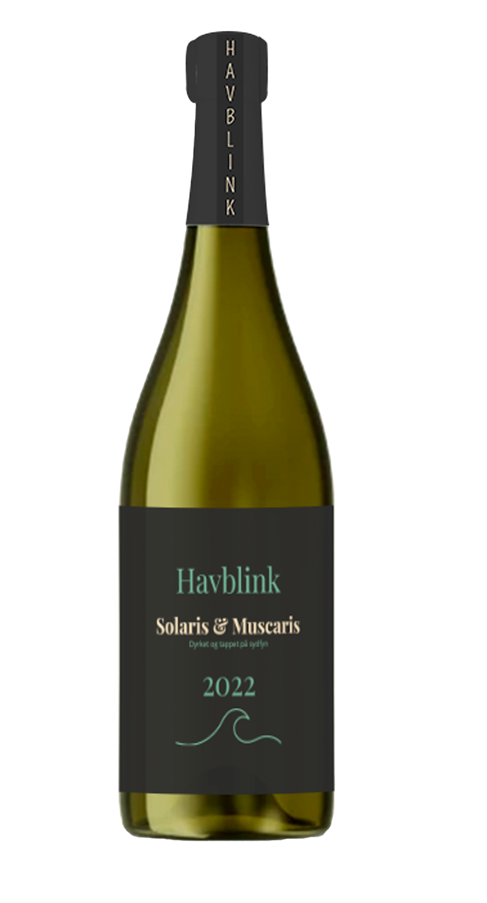

Solaris & Muscaris 2022
Krydret finesse med nordisk krop
Denne vin har en mere markant struktur: citrus, salvie og et
strejf af hvid peber.
Den viser hvordan dansk vin kan være alt andet end kedelig.
Server den til tapas, gedeost eller alene med udsigt til havet.